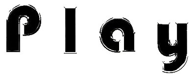
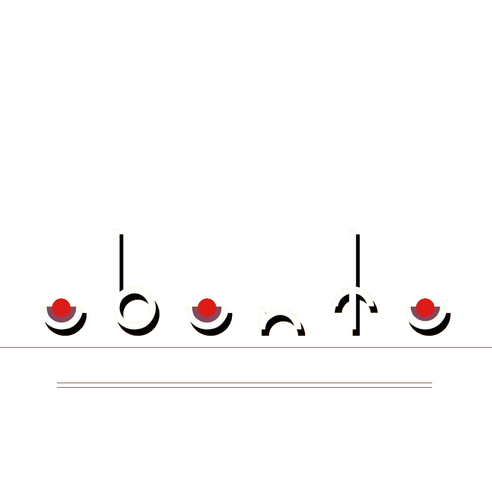
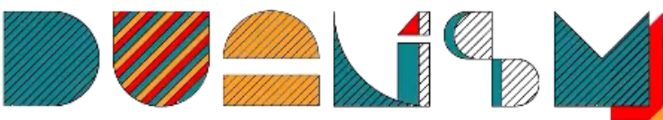
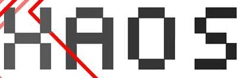
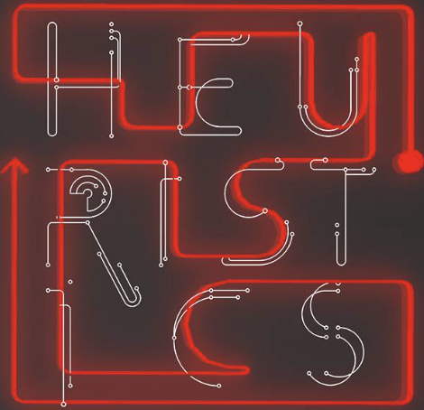

WELCOME TO THE TEDxNTUA

About the
The TEDxNTUA Archive is a collection of all material produced by TEDxNTUA since its 2015 inception. Scroll down to see...

2023

Memory is what allows us to discuss, compare, decide, justify, foresee, anticipate, and most importantly: it is the very baseline of our evolution and the fundamental pillar of our culture. As we see it, remembrance and recollection are inextricably connected with our identity. They define the past’s relevance in time and our existence’s significance in the world's timeline. Therefore, Mneme becomes our temporal and existential consciousness. In Greek mythology, Mnemosyne was the Goddess of Memory and mother of the nine Muses who were originally patron goddesses of poets of the oral tradition. Therefore, we aspire to enhance the concept of “Ideas Worth Spreading” by bringing the importance of passing down knowledge, into the spotlight.
2022

From a young age, Play is a notion that represents a powerful, motivational force, coming from within ourselves. A force that as we grow older, accompanies us through the journey that we call life. It’s in our dreams, our jobs, our activities, basically every aspect of it and it’s giving us purpose and the necessary motivation to keep going! At the first listen to PLAY we are automatically transported to our childhood and we nostalgically reminisce about those moments, but TEDx NTUA 2022 sets it as a goal - and a challenge - to overturn this spontaneous thought. PLAYis present in every aspect of life, it follows us silently, it evolves as we grow older and change, always remaining a means of escape, a reminder that everyday life is not as strict and monotonous as it sometimes seems. It accompanies us in almost all areas, from everyday life to dreams, from work to entertainment, from stop to play!
2021

How does every little act affect our fellow men? How do we all connect with each other? Does that mean we are all equal? Ubuntu is a word with a double meaning. On the one hand it is widely known for its open source software name and on the other it is an African proverb that comes from the Zulu tribe. Specifically it means «I am because you are». It has its roots in African humanitarian philosophy, where the idea of community is one of the building blocks of society. Ubuntu is this cloudy concept of unity, humanity, completeness, solidarity and faith in a global bond that unites all of humanity. What does ubuntu really mean and how many things can it connect to? The TEDxNTUA 2021 team will give its own interpretation on 29th of May.
2020

We approach subjects that touch upon current social, humanitarian, artistic and scientific issues, which consist of two principles. The two principles seem to be unrelated and opposite to one another, but in reality they complement each other and act jointly to achieve a harmonious unity. What are humans made of? Mind and body or just matter? How does the wave-particle duality lead to the cutting-edge technology of quantum computing? How do the parallel existence of electricity and magnetism and their relationship as identified by Maxwell, lead to our modern economy and society? How does digital dualism define our daily life? How does the contrast between white and black compose the essence of a picture? How do emptiness and fullness compose landscapes in architecture? In all of the above, the dependence relationship between the two principles is clear. Without the existence of the first, the meaning of the other is negated.
2019

Enigma: that which is difficult to interpret, that which remains a mystery, something uncertain or inexplicable, a riddle not yet solved. The uncertain, the paradox, the unsolved. It’s everywhere. From the grandest existential question, to the tiniest everyday query, enigma is the source of knowledge. A man-made invention, a problem man places upon himself. An innate need for answers, which builds superstructures: physics, biology, computer science, chemistry, astronomy, arts, philosophy, history, psychology, sociology, religion, politics. Every answer creates a new question, and leads the way to a new explanation, more updated, more satisfactory, more complete. The enigma is in search of a solution to what troubles the human mind, and the enigma is everything that troubles the human mind, at the same time. It’s the way of facing the world without the possibility of being wrong. It’s a positive perspective of an uncertain reality. The admiration of the enormous progress of humanity. An attempt of self-awareness. We can climb the mount of knowledge, one enigma at a time.
2018

The notion of Chaos today is synonym to confusion and disorder. In the past though, ancient Greek Philosophers, thought highly of Chaos and considered it fundamental to the creation of Cosmos, that is, the Universe. Chaos was the original matter that transformed the abnormal uniformity of nature into normal diversity. We witness Chaos in its scientific meaning in numerous situations in everyday life: smoke rising up smoothly into the air and suddenly vanishing, unexpected traffic in a Highway road, irregular leaking of a tap, inexplicable fluctuations of the Stock Market Index and many more instances explained mostly by this Theory of Chaos. Chaos resides in our daily routine. No matter how hard we fight for harmony and well-being in our life, we frequently face hardships and difficulties that break the order
2017

We've been navigating with maps that precede our geography. We are following the long way back in search of the short way forth. Admittedly, we have drifted away from what is ahead. Hopefully, we're not too late to realize we won't make it on time. Hopefully, we won't be too proud to take a shortcut.
2015

A butterfly flaps its wings in China and a tornado rises in midwestern America. Highly unlikely, although one can't underestimate the sensitive dependency between the smallest of our actions and their impact on the bigger picture. Introducing TEDx NTUA, we want to look deep into the ways our individual creativity changes the world around us. Experiment with different reagents and ignite the proliferation we want to see in society. Push the first domino and admire the intricate way the rest fall into. Our theme this year is Chain Reactions. Empowered by the cohesion that binds the disciplines of engineering we hope to plant a seed of hope and harvest a forest of endless possibilities.